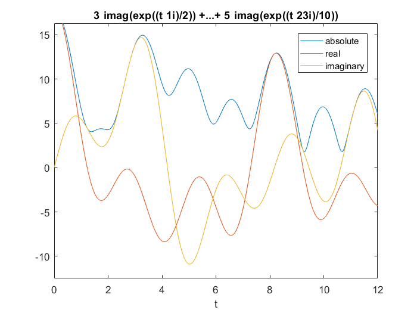
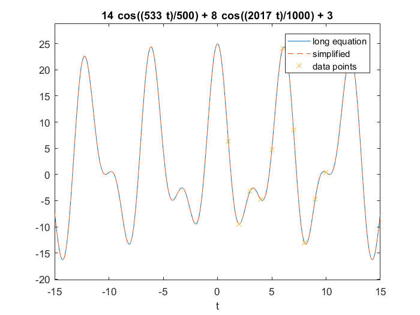
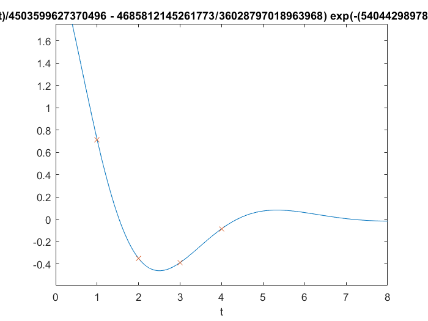

Contents
Exercise 4.1 to 4.5
clear all
syms t fun phi sol
a=[3,4,5,6];
theta=[0.5,-1.5,2.3,0.8];
fun(t)=0;
for x = 1:4
fun(t)=fun(t)+a(x)*exp(1i*theta(x)*t);
end
ezplot(abs(fun),[0,12]); hold on;
ezplot(real(fun),[0,12]);
ezplot(imag(fun),[0,12]); hold off
legend('absolute','real','imaginary')
f=zeros(1,8);
for x = 1:8
f(x)=fun(x);
end
f
[a,theta]=pronys(f);
theta
a
f =
Columns 1 through 4
3.7646 + 5.4810i -3.0750 + 2.9889i -0.9767 +13.8476i -8.2717 + 4.6098i
Columns 5 through 8
-2.5222 -10.8747i -4.4354 - 2.4836i -4.6788 - 3.2315i 11.8768 - 1.5976i
theta =
-1.5000 + 0.0000i
2.3000 + 0.0000i
0.5000 + 0.0000i
0.8000 + 0.0000i
a =
4.0000 + 0.0000i 5.0000 + 0.0000i 3.0000 + 0.0000i 6.0000 - 0.0000i

exercise 4.6
f=[6.3185,-9.4712,-3.1924,-4.7683,4.7884,24.0638,8.4936,-13.0161,-4.6636,0.3716];
[a,theta]=pronys(f)
fun(t)=0;
for c = 1:length(a)
fun(t)=fun(t)+a(c)*exp(1i*theta(c)*t);
end
ezplot(fun(t),[-15,15]); hold on;
fun(t) = 3+8*cos(2.017*t)+14*cos(1.066*t)
s=ezplot(fun(t),[-15,15]);
set(s,'linestyle','--')
scatter([1,2,3,4,5,6,7,8,9,10],f,'x'); hold off;
legend('long equation','simplified','data points');
a =
Columns 1 through 4
4.0000 + 0.0000i 4.0000 - 0.0000i 3.0001 + 0.0000i 7.0001 + 0.0000i
Column 5
7.0001 - 0.0000i
theta =
2.0170 + 0.0000i
-2.0170 + 0.0000i
0.0000 + 0.0000i
1.0660 + 0.0000i
-1.0660 + 0.0000i
fun(t) =
14*cos((533*t)/500) + 8*cos((2017*t)/1000) + 3

exercise 4.7
f=[0.7153,-0.3497,-0.3861,-0.0831];
[b,exponenti]=pronys(f);
theta=real(exponenti);
sigma=imag(exponenti);
a=2*abs(b(1))
sigma=-sigma(1)
theta=theta(1)
sol(t,phi)=a*exp(sigma*t)*cos(theta*t+phi);
phi=double(solve(sol(1,phi)==f(1),phi))
phi=phi(1)
ezplot(sol(t,phi),[0,8]);hold on;
scatter([1,2,3,4],f,'x');hold off;
a =
2.3399
sigma =
-0.6000
theta =
1.1100
phi =
-0.1301
-2.0900
phi =
-0.1301
